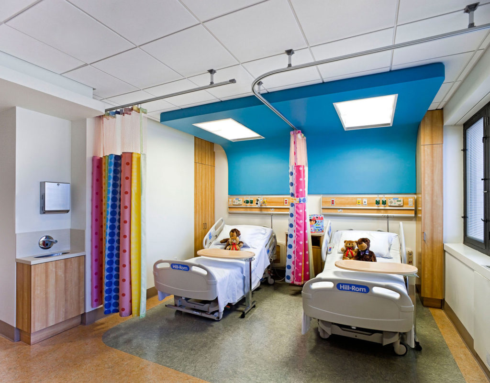

News in NovaHealth Hospital
Highlighting NovaHealth’s latest medical advancements, patient care initiatives, and hospital updates.
Bringing you up-to-date with NovaHealth Hospital’s innovations, health programs, and important announcements.
Highlighting NovaHealth’s latest medical advancements, patient care initiatives, and hospital updates.
Bringing you up-to-date with NovaHealth Hospital’s innovations, health programs, and important announcements.

We are pleased to announce the opening of our new pediatric wing, designed to provide specialized care for children. The new facility includes modern patient rooms, advanced equipment, and a child-friendly environment to make hospital visits more comfortable.
Quote from the Doctor: "Our new pediatric wing represents our commitment to providing the best care for our youngest patients," said Dr.Vlora Jaha Ismaili.
NovaHealth Hospital is introducing telemedicine services for convenient online consultations. Patients can now access doctors from the comfort of their home.
Quote from the Doctor: "Our telemedicine services make healthcare more accessible and convenient for all patients," said Dr.Liridon Hoxha.

NovaHealth Hospital has completed the expansion of its Cardiology Center to provide advanced heart care services. The new wing includes additional procedure rooms and cutting-edge diagnostic equipment.
Quote from the Doctor: "Our expanded Cardiology Center allows us to deliver world-class heart care to more patients," said Dr.Amir Iljazi.